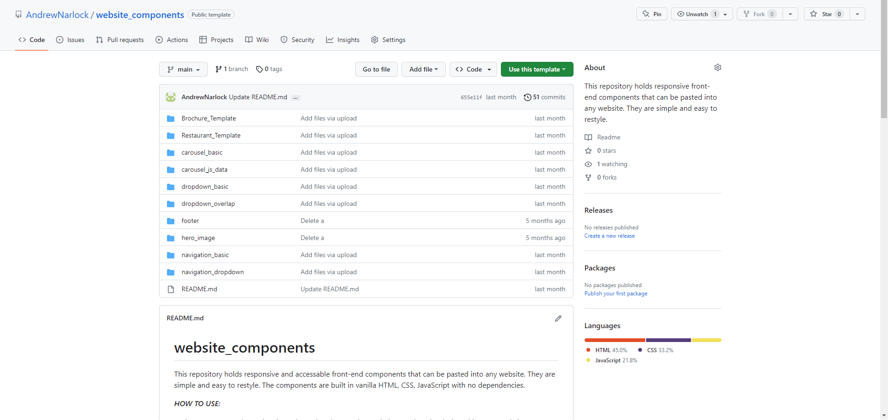
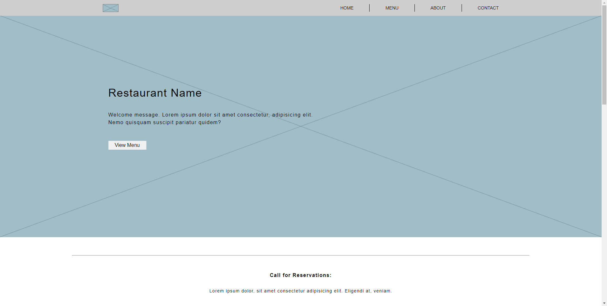

The goal of this project is to build a library of components and templates that are easy to copy, paste, and redesign for any custom website. The library currently holds basic components such as carousels, navigation bars, headers, as well as full templates for basic static websites. The library can be found here: Component Library
Each component consists of basic HTML, CSS, and JavaScript blocks that can be copy and pasted into any custom website. Codepens are also available to view how each component works. Each component is responsive and accessible. New components are being worked on and will be added to the library in the future.
The library also includes static website templates that are built using the components found in the library. They are easy to copy and redesign for any basic website. This portfolio was built using the templates found in this library. I plan on adding basic routing and server templates for full stack websites in the future.
